Cell signalling
The earlier signalling lectures followed fast signals: a hormone binds, a second messenger or a kinase cascade changes a protein within seconds. Today: signals that change which genes a cell uses, and so decide what the cell becomes. They build tissues in the embryo and keep them in shape in the adult.
After this lecture you can:
ELO 3 (signalling).
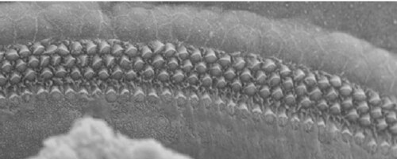
Inner ear (cochlea) of a mouse embryo, scanning electron micrograph. Each V-shaped tuft is the hair bundle of one hair cell. Between them, hidden below, are supporting cells.
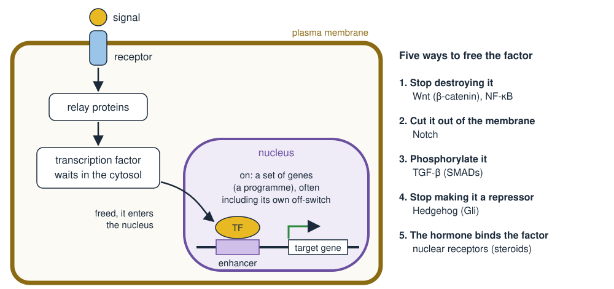
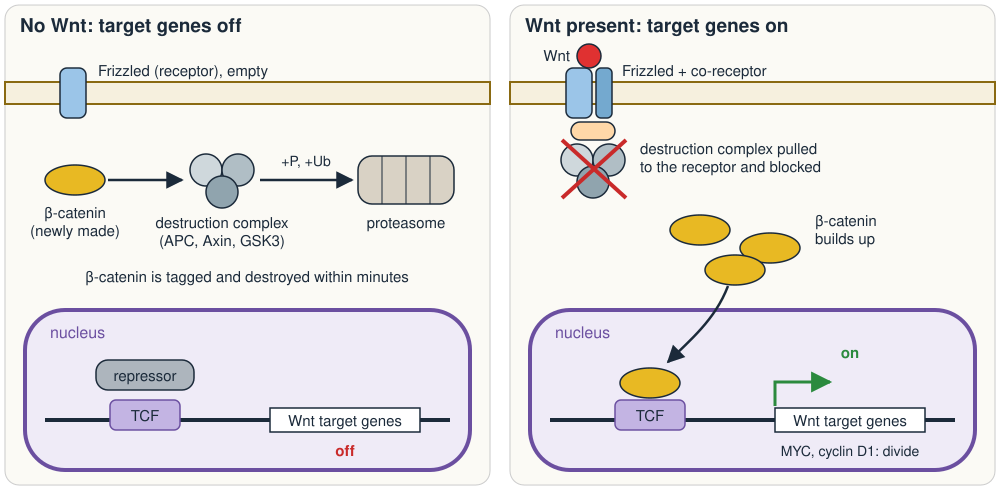
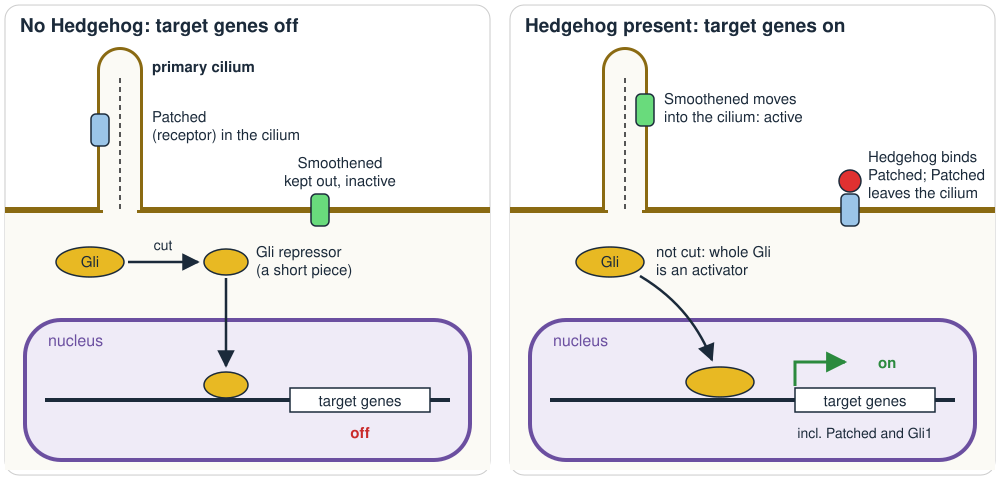
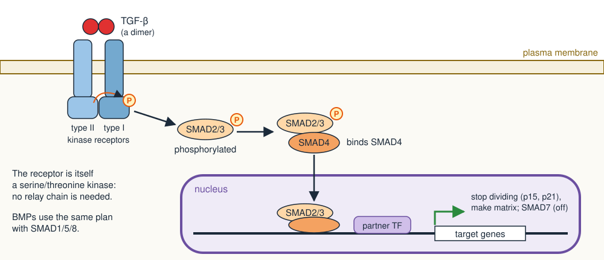
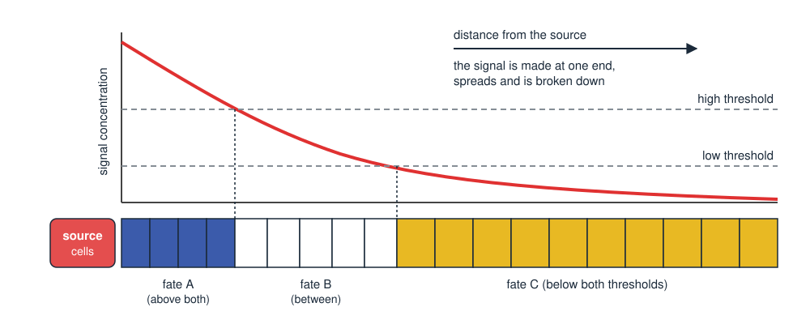
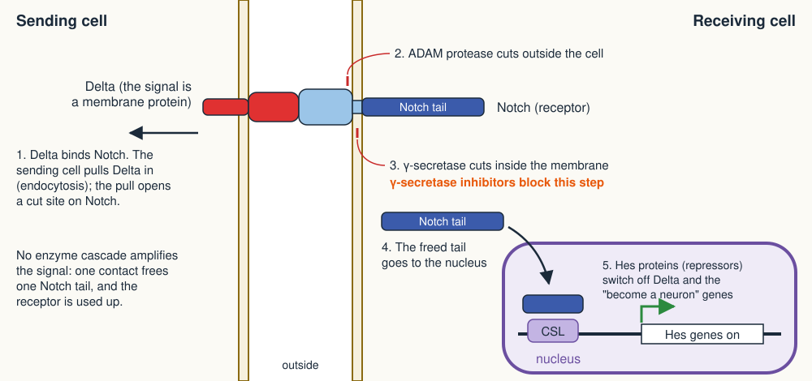
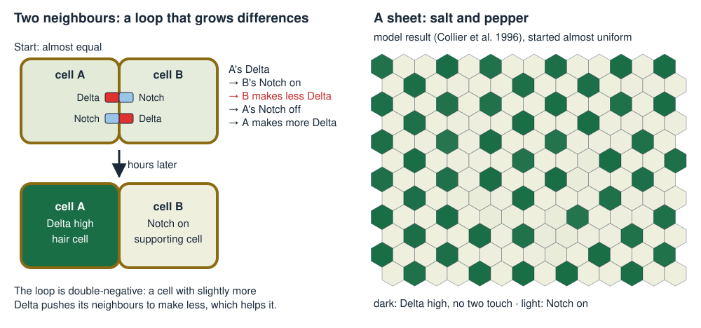
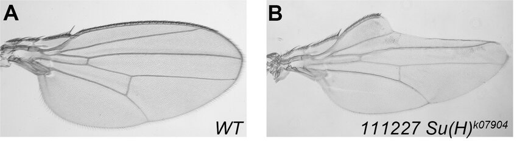
Fruit-fly wings. A: normal. B: the fly CSL protein (Su(H)) removed in patches of the wing: the wing edge is lost in notches.
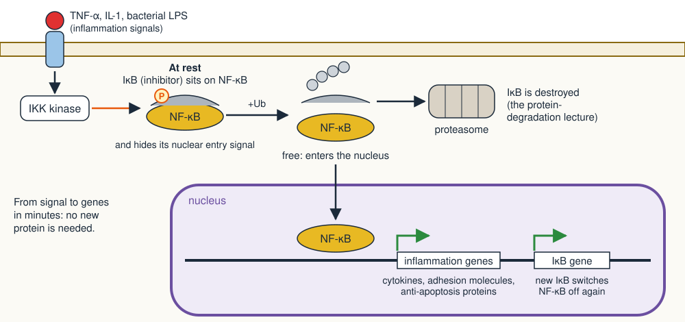
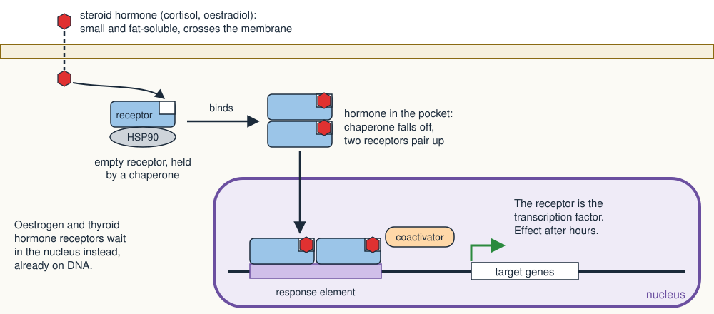
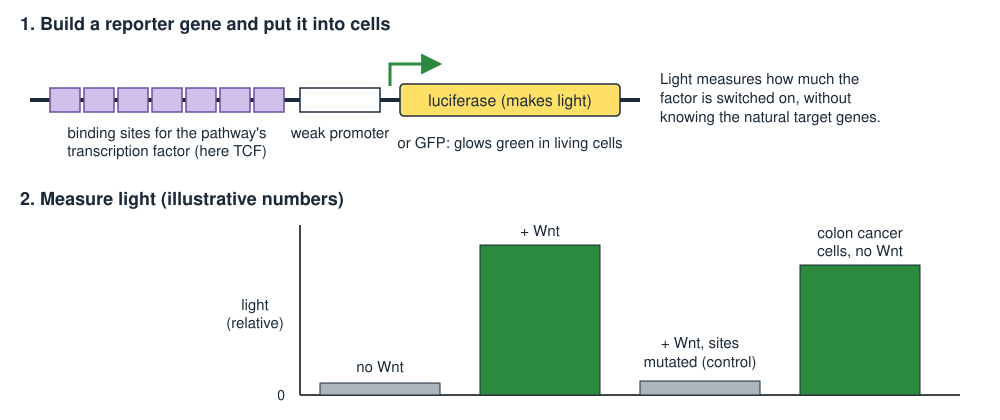
| Pathway | Signal | Factor is freed by | Off-switch (feedback) |
|---|---|---|---|
| Wnt | secreted, local | no longer destroyed (β-catenin) | Axin2, destruction complex |
| Hedgehog | secreted, gradient | no longer cut into a repressor (Gli) | Patched |
| TGF-β/BMP | secreted, gradient | phosphorylated by the receptor (SMADs) | SMAD7, phosphatases |
| Notch | membrane-bound (contact) | cut out of the membrane (Notch tail) | Hes repressors, receptor used up |
| NF-κB | cytokines, microbes | its inhibitor IκB destroyed | new IκB |
| Nuclear receptors | steroid, thyroid hormone | hormone binds the factor | hormone breakdown |
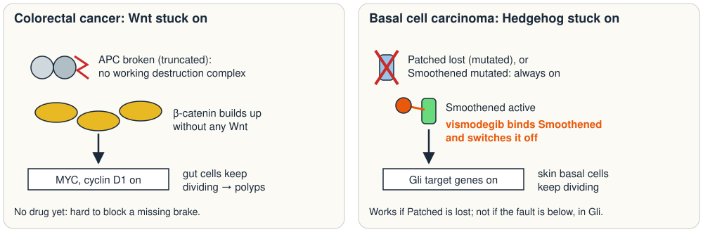
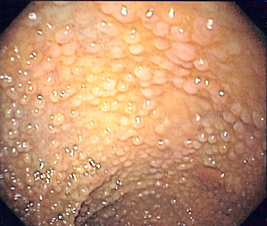
Familial adenomatous polyposis: hundreds of small polyps (endoscopy).
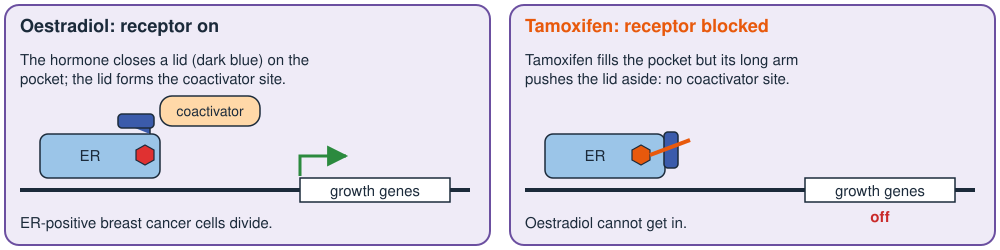
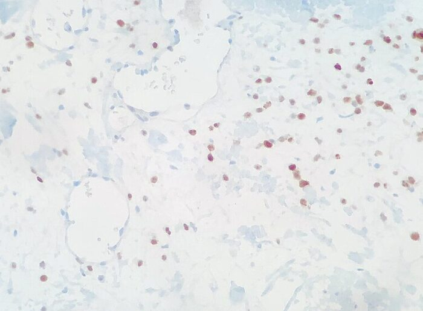
Breast cancer stained for ER: brown nuclei carry the receptor.
Read more (optional): Alberts et al., Molecular Biology of the Cell, 7th ed., ch. 15 (and ch. 21–22 for development and stem cells).